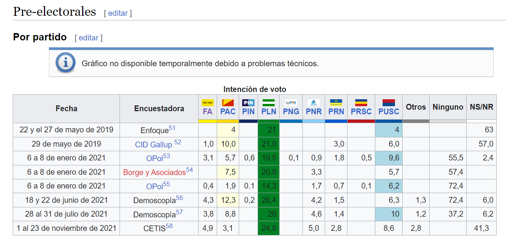
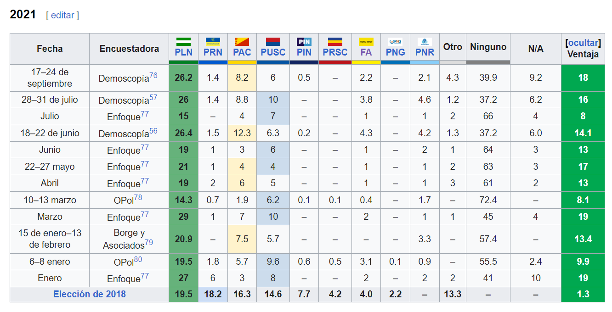
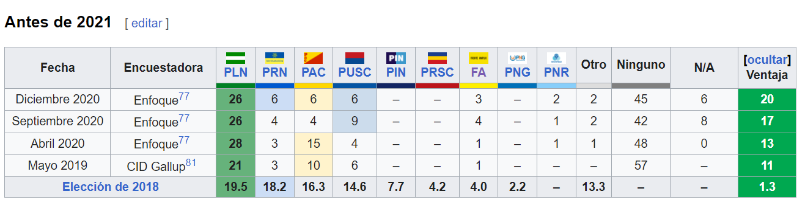

| Candidatos | Página del partido |
|---|---|
| Partido Liberal Progresista | |

|
Partido Frente Amplio |
| Candidatos | Página del partido |
|---|---|
| Partido Liberal Progresista | |
|
|
Partido Frente Amplio |
| Bandera | Candidato | Encuesta1 | Encuesta2 |
|---|---|---|---|
Eliecer Feinzaig |
Primera Ronda por Candidato

|
Pre-electorales por partido  | |
Jose Maria Villalta |
Elecciones del 2021  | Encuestas antes del 2021  |